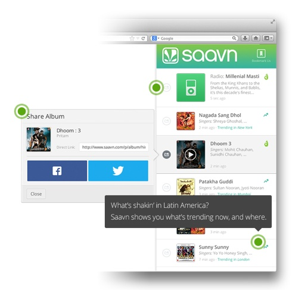
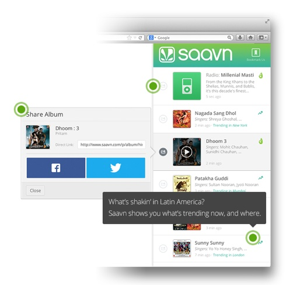

saavn
Music Feed
Discover fresh music and hear more of what you love.
Activate now »Saavn is the best Bollywood and Indian music listening experience, online and on the go. It's a simple, beautiful, and 100% free way to search, discover, and listen to over a million songs, from the latest hits to hard-to-find classics.
Learn More

 
